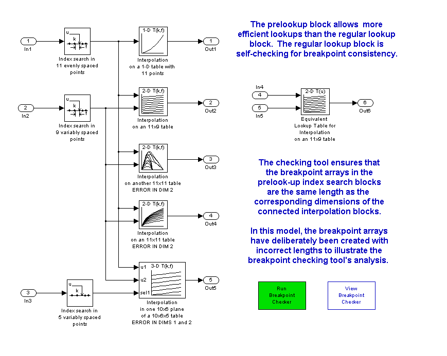
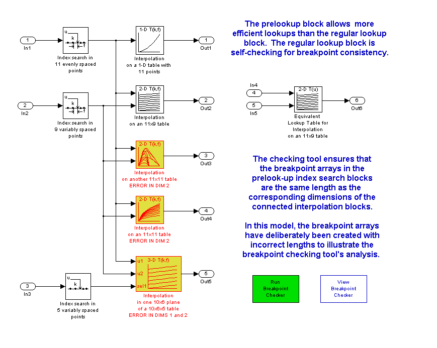

This demo shows one way to check a model to ensure that the prelook-up blocks have breakpoint data lengths that match the corresponding dimensions of table data for connected interpolation blocks. (Open the model: matlab:sldemo_bpcheck)
The PreLook-Up Index Search block allows you to minimize the number of index searches performed across a set of look-up tables and also to mix clipping, extrapolation, and index search algorithms within one table calculation.
mdl = 'sldemo_bpcheck';
open_system(mdl)
 This capability introduces a need to ensure that the breakpoint array length in the prelook-up blocks matches the corresponding table dimension in the connected interpolation block(s). The M-function matlab:edit('slcheckprelookups.m') can analyze a model and report on any mismatches it encounters between prelookup and interpolation blocks.
Errors have been deliberately introduced in the model to illustrate the use of a breakpoint checking tool that analyzes the model and ensures the breakpoint lengths match the table dimensions.
chkblks = slcheckprelookups('sldemo_bpcheck')
Checked 5 interpolation blocks, found 4 issues to review.
Index list: 1, 2, 6, 10
chkblks =
1x10 struct array with fields:
interpBlkName
interpBlkPort
interpBlkParam
interpBlkDimSize
prelookupName
prelookupParam
prelookupSize
mismatch
errorMsg
This model has 3 blocks with data inconsistencies. Note that it is possible to have up to one inconsistency per dimension, so a 3-D table could have up to 3 inconsistencies. Here is the set of mismatched items from the full set of checked blocks, along with details on the first mismatch in the list:
mismatches = find([chkblks.mismatch] == true) chkblks(mismatches(1))
mismatches =
1 2 6 10
ans =
interpBlkName: [1x86 char]
interpBlkPort: 1
interpBlkParam: 'reshape([1:300], [10,6,5])'
interpBlkDimSize: 10
prelookupName: [1x54 char]
prelookupParam: '[0:10:100]'
prelookupSize: 11
mismatch: 1
errorMsg: ''
[Close the model to reset the screen capture]
close_system(mdl)
The interpolation blocks with mismatch issues can be highlighted using Simulink's hilite_sytem() command:
open_system(mdl) for k = 1:length(mismatches) hilite_system( chkblks(mismatches(k)).interpBlkName, 'error' ); end
NOTE: you can remove highlighting from a model using the View / Remove highlighting menuitem or this command:
set_param(mdl,'HiliteAncestors','none')